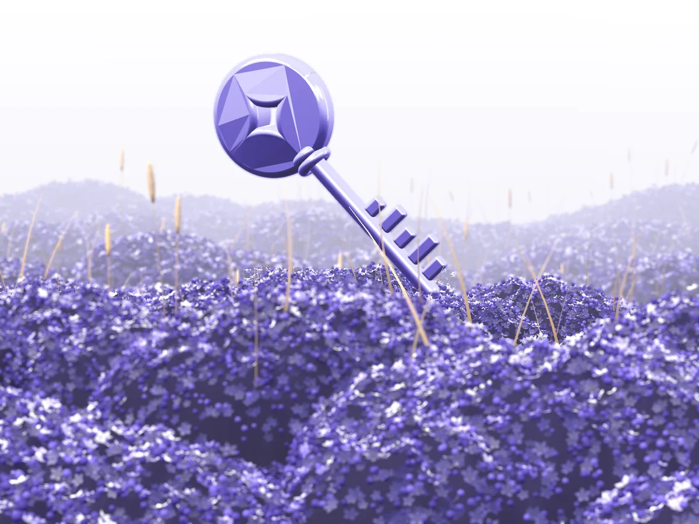
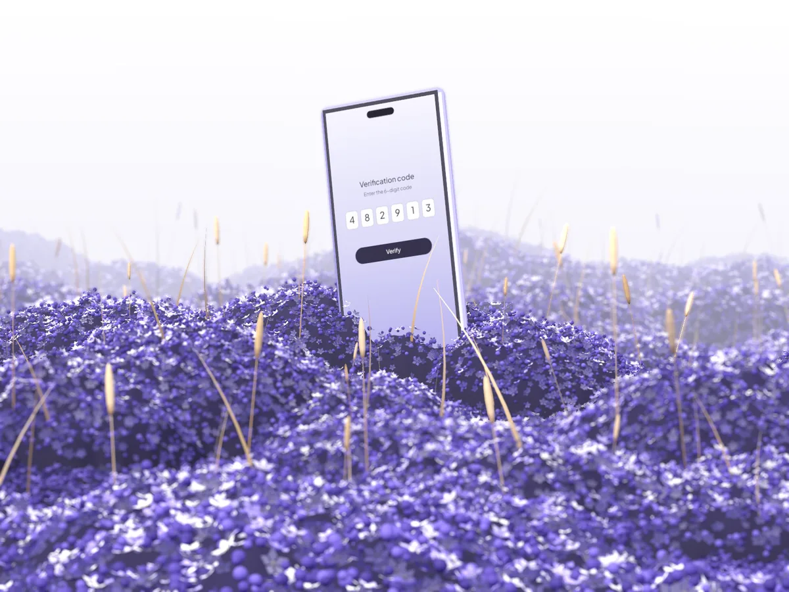

Accounts that come back
Tranom matches your situation to the right recovery path and tells you exactly which proof Roblox Support will ask for.
An AI recovery assistant for Roblox accounts. Tranom builds your proof of ownership, writes your request to Roblox Support, and helps you lock the account down once it's back.
Try it nowTranom is an AI assistant that turns a lost Roblox account into a clear recovery plan, using only Roblox's official recovery and support channels.
Tranom matches your situation to the right recovery path and tells you exactly which proof Roblox Support will ask for.
No passwords, cookies or 2-Step codes. Tranom never logs in for you, so you stay in control of your account.
Answer four questions and get your steps in order, plus a support message that's ready to send.
Covers every way an account gets lost, from a typo to a takeover.
Tranom in action
Tranom covers the most common ways players lose access, from a forgotten password to a hijacked account with a changed email.
Someone changed your password or email? Tranom helps you gather proof that the account is yours and drafts a clear ticket for Roblox Support.
Plan my recoveryReset through the email or phone on your account in a few taps. Tranom tells you what to try when the reset email never shows up.
Plan my recovery
New phone, lost authenticator, no backup codes? Tranom shows which options you can still use and what to send Support when none are left.
Plan my recovery
Think a ban was a mistake? Tranom helps you write a calm, factual appeal and send it through Roblox's official appeals page.
Plan my appealHow it works
Pick your situation and what you can still reach: the email, the phone, backup codes, or a device that's still signed in.
See the official steps for your case in the right order, plus the proof of ownership worth collecting before you write to Support.
Copy your ready-made message into the Roblox Support form. Once you're back in, work through the security checklist.
Recovery assistant
Answer four questions and your plan updates as you go. Everything runs in your browser, and Tranom never asks for your password.
Your recovery path
Proof of ownership Fair
Roblox Support never asks for your password, and neither does Tranom. Anyone who offers to recover your account for your password, your browser cookies or Robux is running a scam.
0 of 6 done
Safety
Tranom never signs in to your account and never asks for passwords, verification codes or browser cookies.
Every step points to Roblox's own reset page, Support form or appeals page. Only Roblox can restore an account.
Your answers are used to build the plan in your browser. Nothing you type is sent to a server.
No. Tranom is an independent tool and isn't affiliated with Roblox Corporation. It prepares you for Roblox's official recovery process, and Roblox Support makes the final decision.
Nobody can promise that, and you should be wary of anyone who does. Only Roblox can restore an account. Tranom helps you send the clearest request with the strongest proof you have.
Receipts for Robux or Premium purchases, a gift card you redeemed, the first email used on the account, roughly when you created it, past usernames, and the devices you play on. Receipts and gift cards usually carry the most weight.
Check your spam and promotions folders, wait a few minutes, and use only the newest link. If the email address on the account was changed by someone else, choose "Someone hacked my account" in the assistant.
It varies. Reply from the same email address when they write back, and avoid opening several tickets for the same problem.
Yes, but ask a parent or guardian to help. They can contact Roblox Support with you and keep the account secure afterwards.